01
AI Data & Annotation
Careful data labeling, categorization, review and quality-focused tasks following project guidelines.
Hi, I'm Stephanie Ann — a detail-oriented, tech-savvy professional ready to support remote teams with digital and AI-related tasks.
Practical support for teams and clients who need organized, accurate and dependable digital work.
Careful data labeling, categorization, review and quality-focused tasks following project guidelines.
Accurate typing, information processing, spreadsheet updates, record organization and web-based data tasks.
Administrative and digital support including online research, file organization and routine computer-based tasks.
Basic troubleshooting, technical assistance, hardware/software support and user-focused problem solving.
Real projects that show my ability to learn tools, solve problems and turn ideas into working systems.
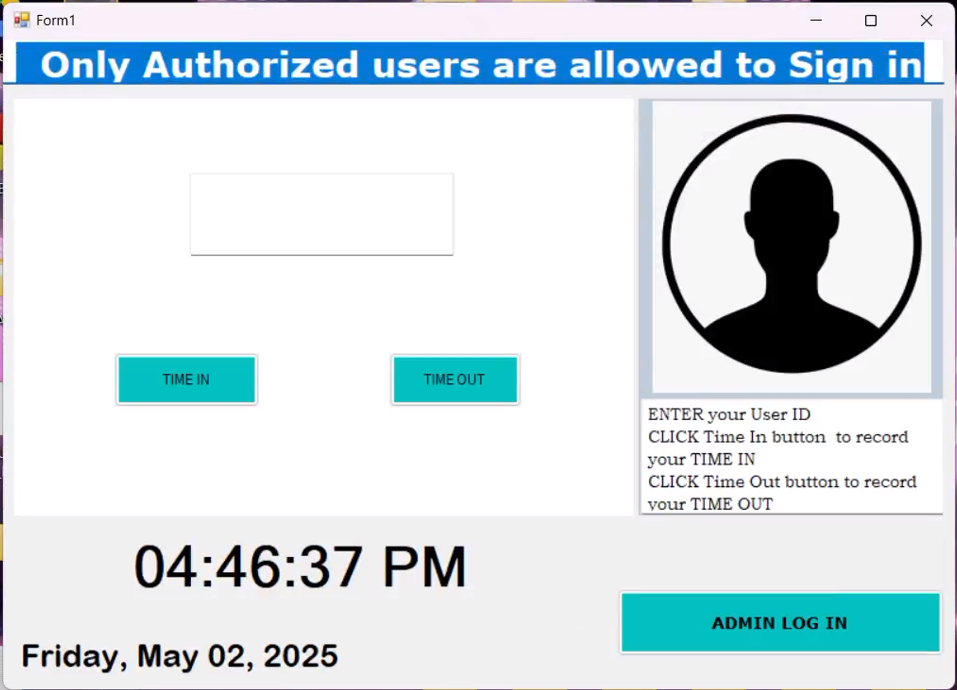
A timekeeping and employee logging system built for structured attendance and record management.
Discuss a project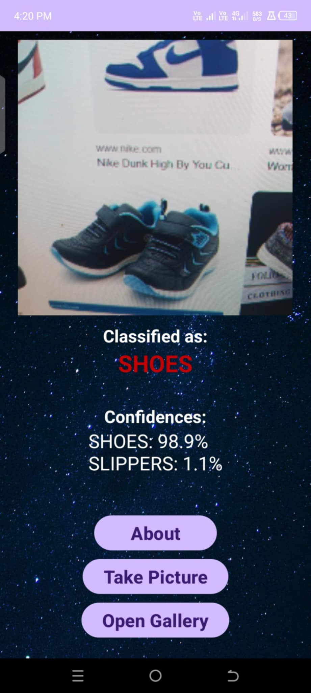
An image-recognition mobile project for identifying footwear categories.
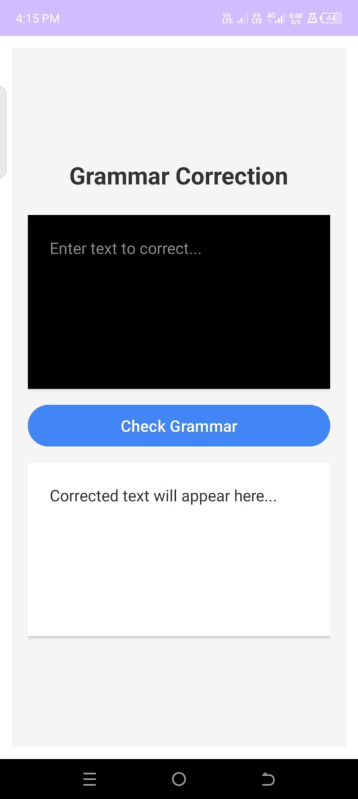
A mobile NLP project focused on real-time grammar and spelling assistance.
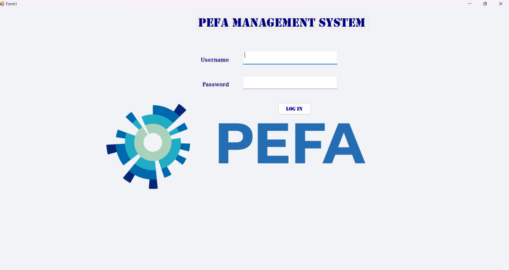
A desktop system for managing financial and activity records.
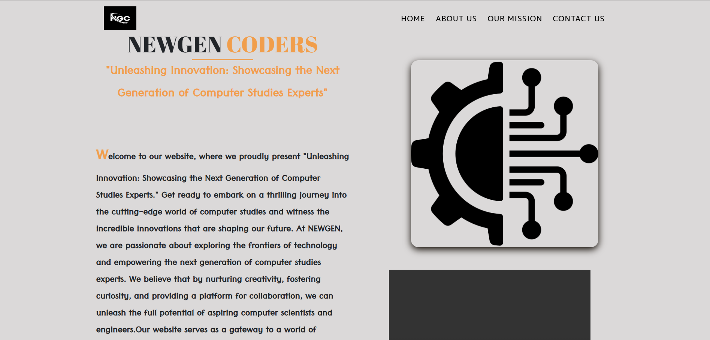
A responsive website concept focused on today's generation, trends and lifestyles.
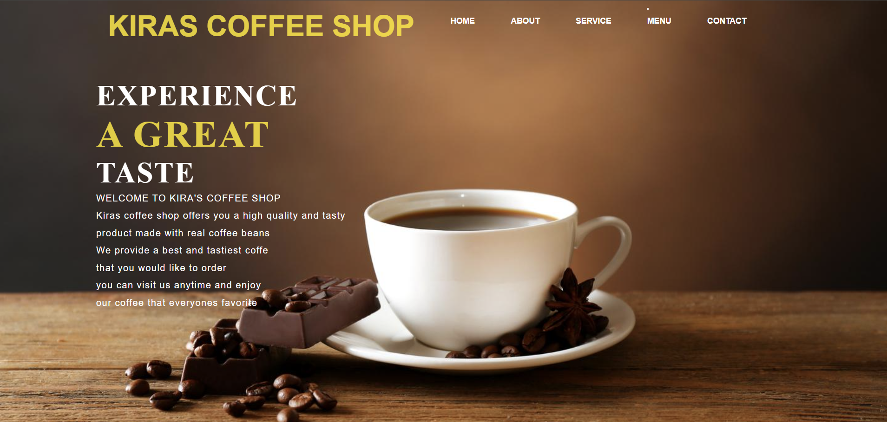
A responsive business website concept with product, menu and contact content.
Professional mindset. Practical skills.
I'm a tech-savvy professional with hands-on experience in IT support, technical assistance and computer-based work. I enjoy tasks that require accuracy, organization, problem-solving and learning new digital tools.
My background includes IT helpdesk experience in a BPO environment, technical support during election operations, and practical development projects. I'm now looking for opportunities where I can contribute remotely through AI data work, data entry, virtual assistance or technical support.
Supported day-to-day IT operations, troubleshooting and user assistance during OJT.
Provided technical support during election operations, including equipment setup and troubleshooting.
Assisted with technical and computer-based tasks in a professional work environment.
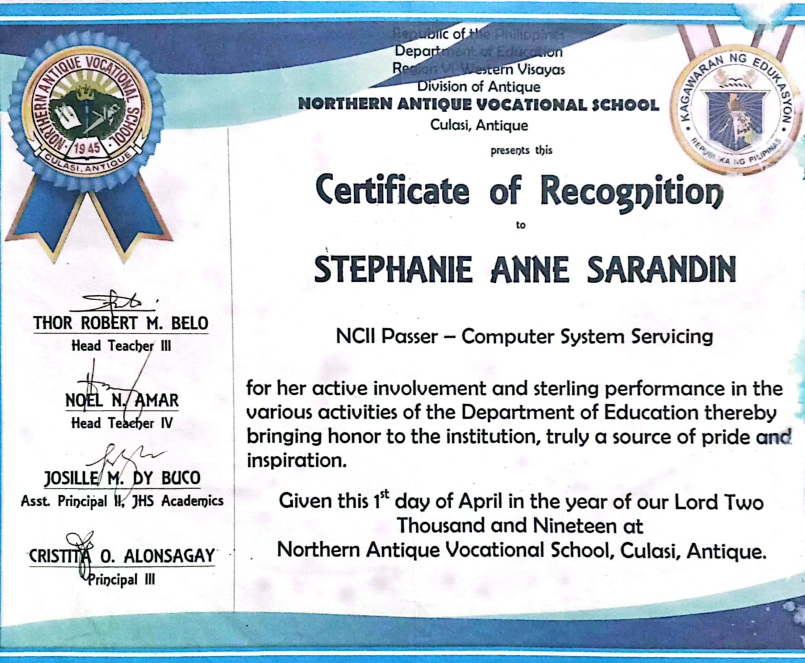
Hardware troubleshooting, software installation and basic networking.
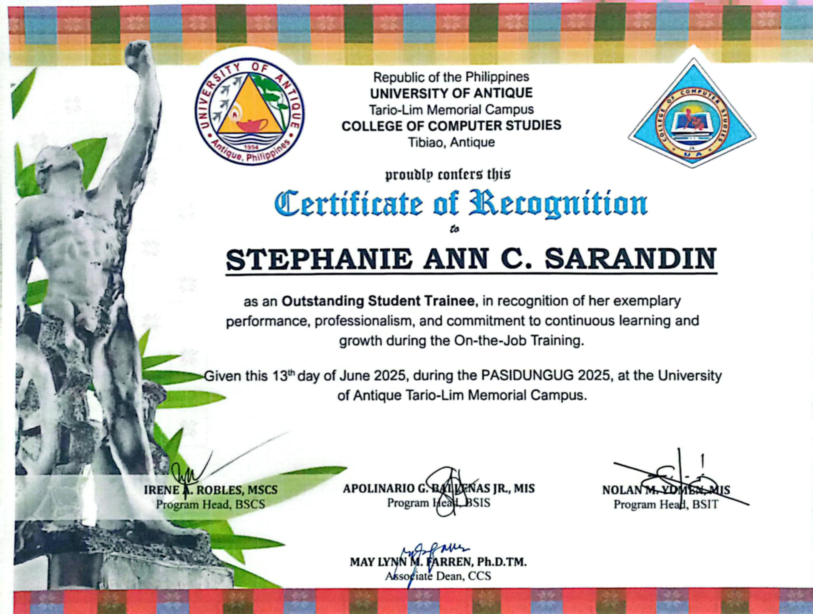
Recognition for performance, initiative and work ethic during internship.
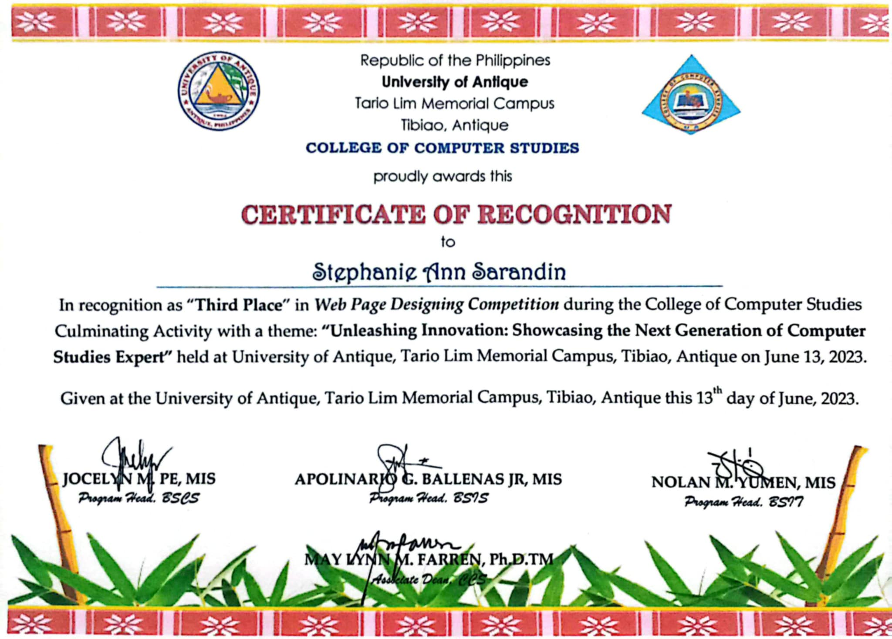
Recognized for creativity and technical skills in web design.
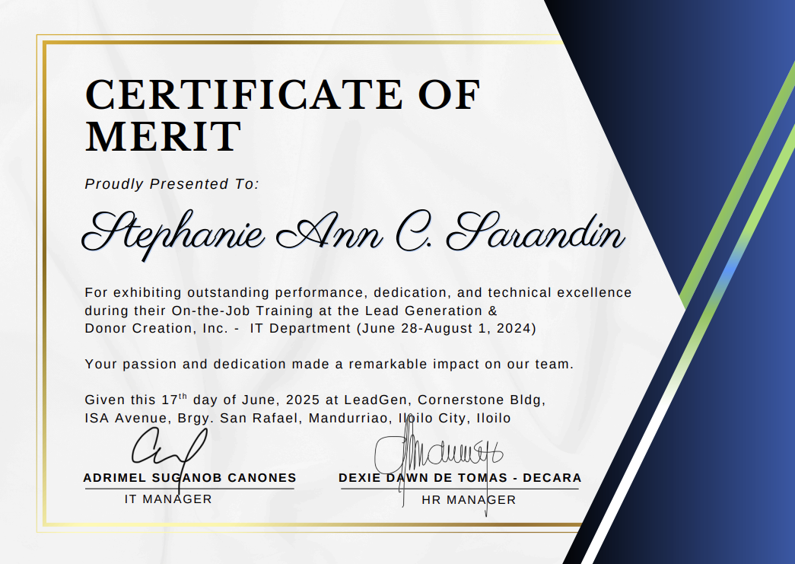
Recognition for strong performance and dedication.
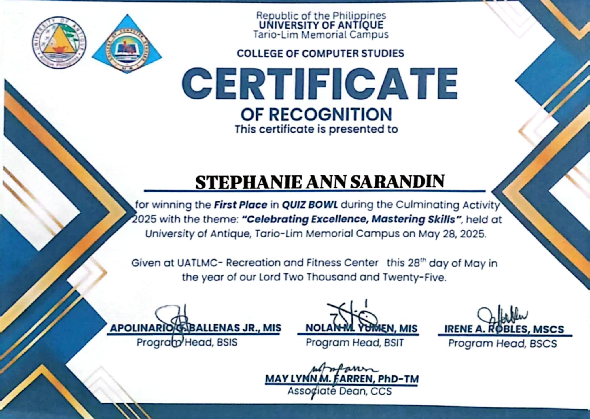
Demonstrated knowledge, quick thinking and teamwork.
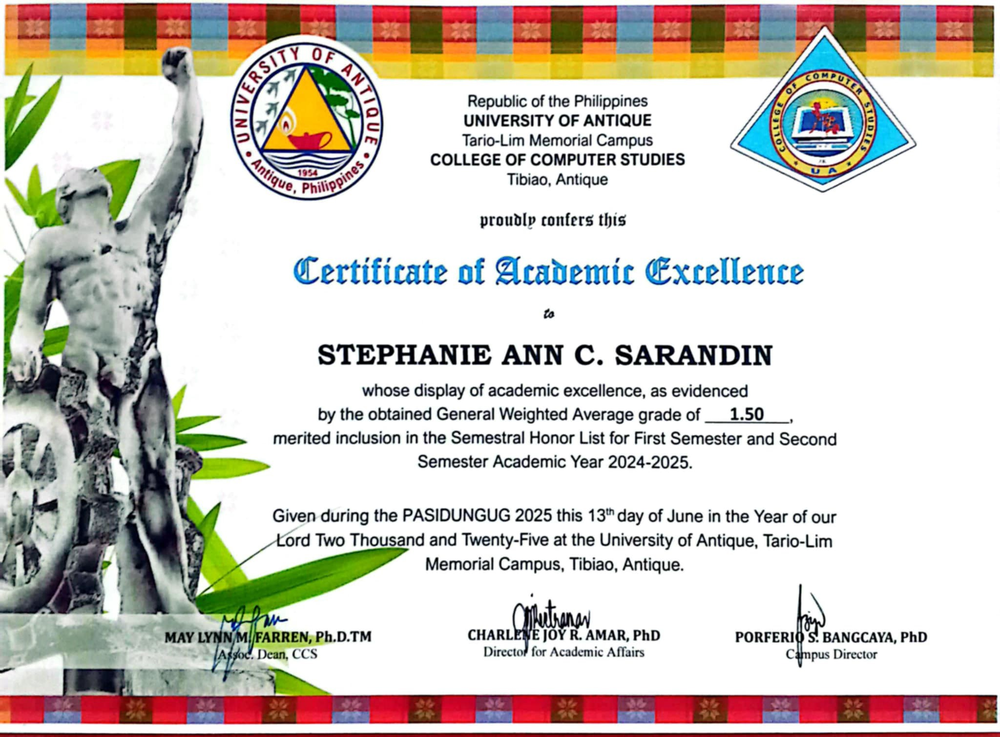
Recognized for strong academic performance.
I'm open to AI data, annotation, data entry, virtual assistance and IT support opportunities.